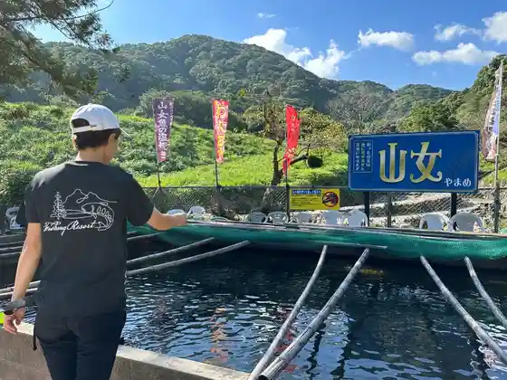

Kazoku Furo Onsen Yama Boshi
Tosu, Saga · 0942-85-1443 · Official / source link
Tosu Puremiamu Autoretto
Tosu, Saga · 050-1724-5483 · Official / source link
Nature Forest Fisshingu Resort
Tosu, Saga · 0942-84-2672 · Official / source link

Nakatomi Kinen Kusuri Museum
Tosu, Saga · 0942-84-3334 · Official / source link
Shin Tosu Eki Tourist Information
Tosu, Saga · 0942-85-8108 · Official / source link
Kiyupii Tosu Kojo
Tosu, Saga · 0942-83-3120 · Official / source link
Torigoe Onsen Sei (Sumika) no Yado Campground
Tosu, Saga · 0942-82-5005 · Official / source link
Otearai Falls
Tosu, Saga · 0942-85-3605 · Official / source link
Asahiyama Park
Tosu, Saga · 0942-85-3603 · Official / source link
Maki Town Tenma Shrine
Tosu, Saga · 0942-83-8415 · Official / source link
Otearai no Taki Campground
Tosu, Saga · 0942-85-3605 · Official / source link
Ekimae Fudosan Sutajiamu
Tosu, Saga · 0942-85-7332 · Official / source link
Kawauchi Kasen Puru
Tosu, Saga · 0942-85-3566 · Official / source link
Nagasaki Kaido Tashiro Yado
Tosu, Saga · 0942-85-3695 · Official / source link
Nagasaki Kaido Todoroki Yado
Tosu, Saga · 0942-85-3695 · Official / source link